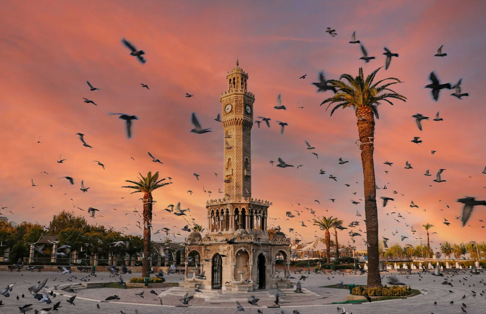
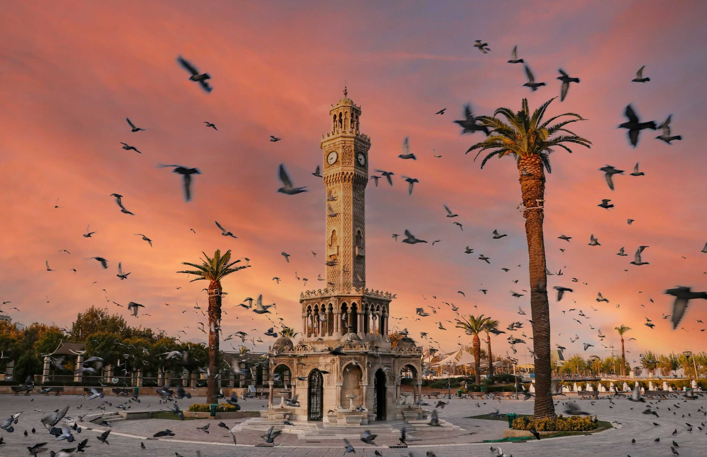

İzmir Hakkında
İzmir, Türkiye'nin batısında Ege kıyısında yer alan modern ve canlı bir liman kentidir. Mavi ile yeşilin buluştuğu bu şehir, tarihi, kültürel ve doğal güzellikleriyle her yıl milyonlarca turisti kendine çeker.
İzmir, Türkiye'nin batısında Ege kıyısında yer alan modern ve canlı bir liman kentidir. Mavi ile yeşilin buluştuğu bu şehir, tarihi, kültürel ve doğal güzellikleriyle her yıl milyonlarca turisti kendine çeker.
